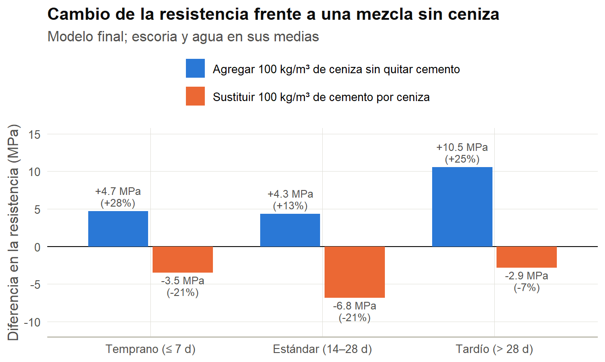

Capítulo 9 Conclusiones
9.1 Hallazgos por objetivo
- Intervalos de confianza y normalidad (objetivo 1): la resistencia media es de unos 35.8 MPa (IC del 95%: 34.1 a 37.7 MPa, calculado por mezclas). Ninguna variable es normal. Entre las mezclas que llevan ceniza, la dosis media es de unos 120 kg/m³.
- Comparación con y sin ceniza (objetivo 2): las mezclas sin ceniza resisten 2.1 MPa más en promedio, pero la diferencia no es significativa al corregir por mezclas repetidas (\(p = 0.22\)) y el efecto es despreciable (\(d = 0.13\)). Al controlar por edad e ingredientes, el signo se invierte: la ceniza se asocia con +8.8 MPa.
- Etapas de curado (objetivo 3): la etapa es el factor más fuerte. Explica el 33% de la variación y la resistencia media sube de 22 MPa (temprano) a 36 MPa (estándar) y 49 MPa (tardío). Las tres etapas son distintas entre sí.
- Correlación (objetivo 4): la correlación entre ceniza y resistencia es débil y negativa (\(-0.08\); \(-0.21\) solo con las mezclas que usan ceniza). Al descontar edad e ingredientes pasa a +0.33.
- Modelo de regresión múltiple (objetivo 5): el modelo final explica cerca del 83% de la variación (\(R^2\) ajustado 0.826, con la raíz de la resistencia como respuesta). Incluye ceniza, etapa de curado (con variables dummy), cemento, escoria, agua y la interacción ceniza × etapa. La interacción es significativa (\(p < 0.001\)) y se mantiene al corregir por mezclas repetidas. Detalle en el capítulo 8.
9.2 Respuesta a la pregunta de investigación
¿En qué medida el uso de ceniza volante y el tiempo de curado influyen en la resistencia a la compresión?
- El tiempo de curado es lo que más pesa. Pasar de la etapa temprana a la tardía sube la resistencia en unos 26 MPa.
- La ceniza no tiene un efecto único: depende de cómo se use y de la edad.
- Si se agrega ceniza sin quitar cemento, la resistencia sube (entre +4 y +10 MPa por 100 kg/m³, según la etapa), sobre todo a edad tardía. Estas cifras vienen del modelo final del capítulo 8, en escala raíz y retrotransformado. El modelo exploratorio del capítulo 6, en escala original, da valores parecidos (+3.6 a +7.5 MPa) con el mismo patrón: la menor ganancia en la etapa estándar y la mayor en la tardía.
- Si la ceniza sustituye cemento, la resistencia baja: cerca de 21% menos en las etapas temprana y estándar y cerca de 7% menos en la tardía. Con edades largas la pérdida casi se compensa.

- La comparación directa entre mezclas con y sin ceniza engaña. Las mezclas con ceniza usan menos cemento y escoria y se ensayaron más jóvenes. Por eso la diferencia cruda no mide el efecto de la ceniza.
9.3 Limitaciones
- Los datos son observacionales: las mezclas con ceniza también difieren en cemento, escoria, superplastificante y edad. Los resultados son asociaciones, no efectos causales probados.
- Las 1030 filas corresponden a solo 428 mezclas medidas a varias edades, así que las filas no son independientes. Se corrigió con errores agrupados por mezcla, y esto hizo menos significativos algunos resultados (por ejemplo, la comparación con y sin ceniza).
- El modelo no es perfecto: el RESET indica que la forma lineal es una aproximación (la etapa agrupa edades muy distintas), la normalidad de los errores es dudosa y hay heterocedasticidad leve.
- La variable
edadtoma pocos valores distintos y la categoría de ceniza baja (≤ 20%) tiene pocas observaciones.
9.4 Recomendaciones y trabajo futuro
- Usar la edad como variable continua (por ejemplo, su logaritmo) en lugar de tres etapas. En la sección 8.6.2 se comprobó que mejora poco el ajuste (\(R^2\) ajustado de 0.826 a 0.84 como máximo) y no resuelve la falta de linealidad, pero permite describir el efecto de la ceniza en cualquier edad y no solo por etapa.
- Ajustar un modelo mixto con un efecto aleatorio por mezcla, que trata la repetición de forma directa.
- Para decidir una receta, comparar sustituciones parciales (por ejemplo, 10% a 20% del cemento) frente a la mezcla de control.
- Confirmar con un experimento controlado (la misma receta con y sin ceniza) antes de atribuir causalidad.